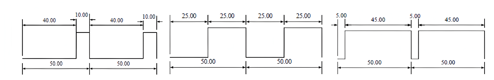
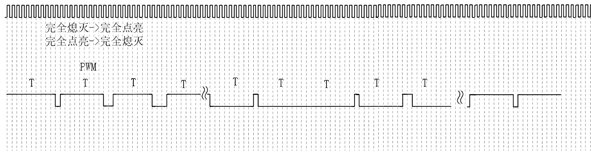
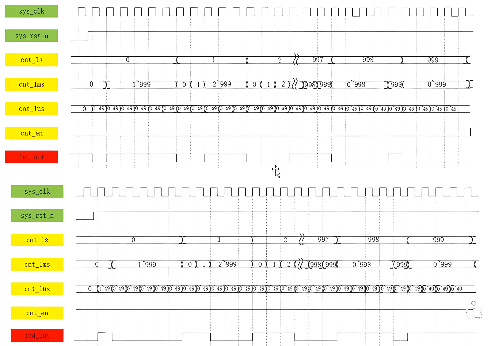

PWM控制
PWM 波即脉冲宽度调制，英文全称Pulse Width Modulation，PWM 控制技术广泛应用在测量、通信、功率控制与变换的等众多领域中，应用的逆变电路绝大部分是PWM 型。以下为周期为1KHz，脉冲宽度（占空比）分别为20%、50%、90%的波形图：

呼吸灯实现原理
呼吸灯的效果采用PWM调波的形式，即快速的改变每个周期的占空比（一个周期内高电平时间占一个周期时间的比值）来实现点亮到熄灭的效果，板卡的led灯是低电平点亮，由下图可以看到低电平由窄逐渐变宽，代表的就是逐渐由灭变亮的过程，当低电平达到最大占空比之后，接着下1s的时间低电平由宽逐渐变窄，代表的就是逐渐由亮变灭的过程，整个过程合起来就是一个呼吸灯的效果，在1s的时间内逐渐变亮，在1s的时间内逐渐变暗。

重点就是理解这段方向控制的代码：
1
2
3
4
5
6
7
8
| always@(posedge sys_clk or negedge sys_rst_n)
if(sys_rst_n==1'b0)
led_out<=1'b1;
else if((cnt_en == 0) && (cnt_1ms <= cnt_1s) || (cnt_en == 1) && (cnt_1ms > cnt_1s))
led_out<=1'b0;
else
led_out<=1'b1;
|
右图是整个波形图，用100MHz的晶振，从0开始计数到49则为0.5us。而1ms是1us的1000倍，以1us为基准，从0开始计数到999则为0.5ms。
同理，以1ms为基准，从0开始计数到999则为0.5s。
当cnt_en为0的时候，实现【完全熄灭】——【完全点亮】
当cnt_en为1的时候，实现【完全点亮】——【完全熄灭】
实现的是以1s为周期，前0.5s实现【完全熄灭】——【完全点亮】，后0.5s实现【完全点亮】——【完全熄灭】。
|

|
Appendix
1
2
3
4
5
6
7
8
9
10
11
12
13
14
15
16
17
18
19
20
21
22
23
24
25
26
27
28
29
30
31
32
33
34
35
36
37
38
39
40
41
42
43
44
45
46
47
48
49
50
51
52
53
54
55
56
57
58
59
60
61
62
63
64
| module breath_led(
input sys_clk,
input sys_rst_n,
output reg led_out
);
parameter CNT_1US_MAX = 6'd49;
parameter CNT_1MS_MAX = 10'd999;
parameter CNT_1S_MAX = 10'd999;
reg [5:0] cnt_1us;
reg [9:0] cnt_1ms;
reg [9:0] cnt_1s;
reg cnt_en;
always@(posedge sys_clk or negedge sys_rst_n)
if(!sys_rst_n)
cnt_1us <= 6'd0;
else if(cnt_1us == CNT_1US_MAX)
cnt_1us <= 6'd0;
else
cnt_1us <= cnt_1us + 6'd1;
always@(posedge sys_clk or negedge sys_rst_n)
if(!sys_rst_n)
cnt_1ms <= 10'd0;
else if((cnt_1ms == CNT_1MS_MAX) && (cnt_1us == CNT_1US_MAX))
cnt_1ms <= 10'd0;
else if(cnt_1us == CNT_1US_MAX)
cnt_1ms <= cnt_1ms + 10'd1;
always@(posedge sys_clk or negedge sys_rst_n)
if(!sys_rst_n)
cnt_1s <= 10'd0;
else if((cnt_1s == CNT_1S_MAX) && (cnt_1ms == CNT_1MS_MAX) && (cnt_1us == CNT_1US_MAX))
cnt_1s <= 10'd0;
else if((cnt_1ms == CNT_1MS_MAX) && (cnt_1us == CNT_1US_MAX))
cnt_1s <= cnt_1s + 10'd1;
always@(posedge sys_clk or negedge sys_rst_n)
if(sys_rst_n==1'b0)
cnt_enc=1'b1;
else if((cnt_1ms==CNT_1MS_MAX)&&(cnt_lus==CNT_1US_MAX)&&(cnt_1s==CNT_1S_MAX))
cnt_enc=~cnt_enc;
else
cnt_enc=cnt_enc;
always@(posedge sys_clk or negedge sys_rst_n)
if(sys_rst_n==1'b0)
led_out<=1'b1;
else if((cnt_en == 0) && (cnt_1ms <= cnt_1s) || (cnt_en == 1) && (cnt_1ms > cnt_1s))
led_out<=1'b0;
else
led_out<=1'b1;
endmodule
|